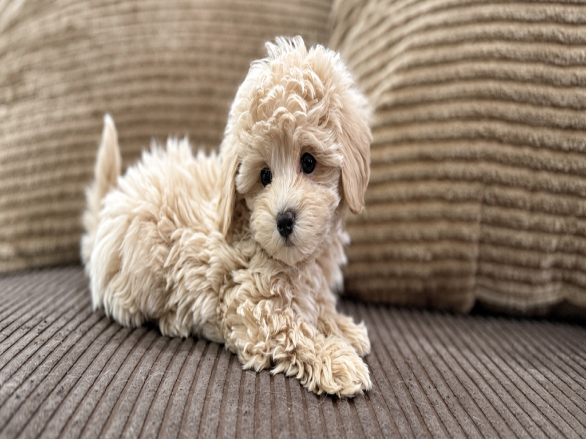
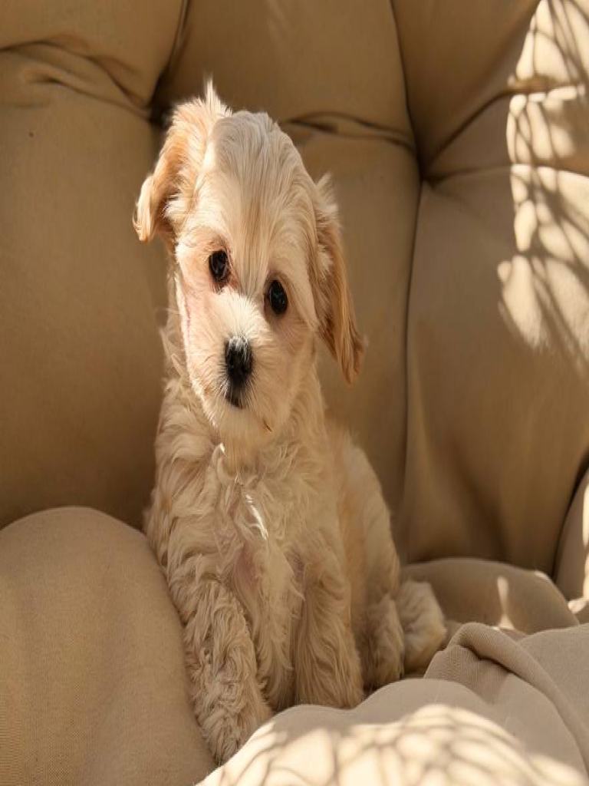
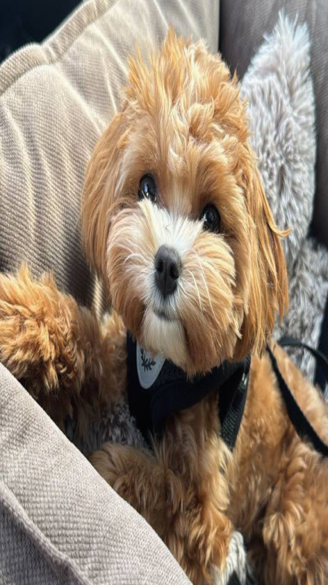
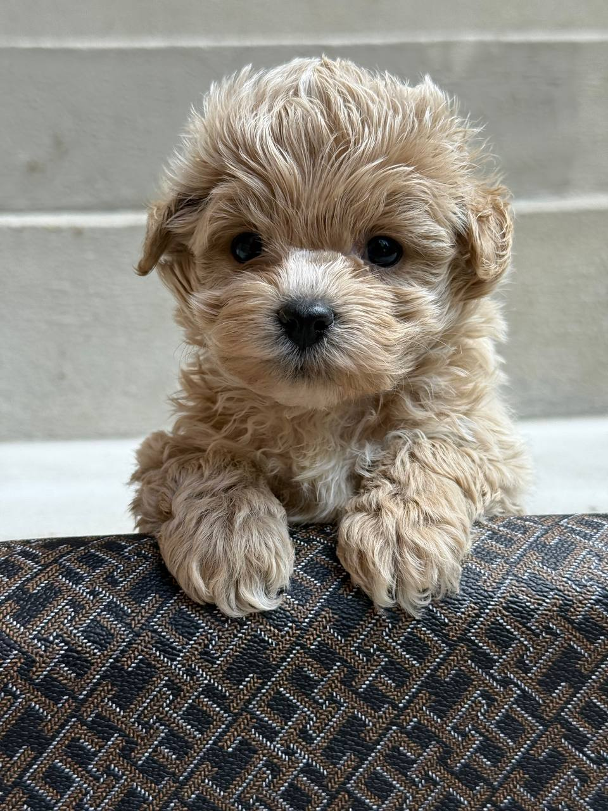
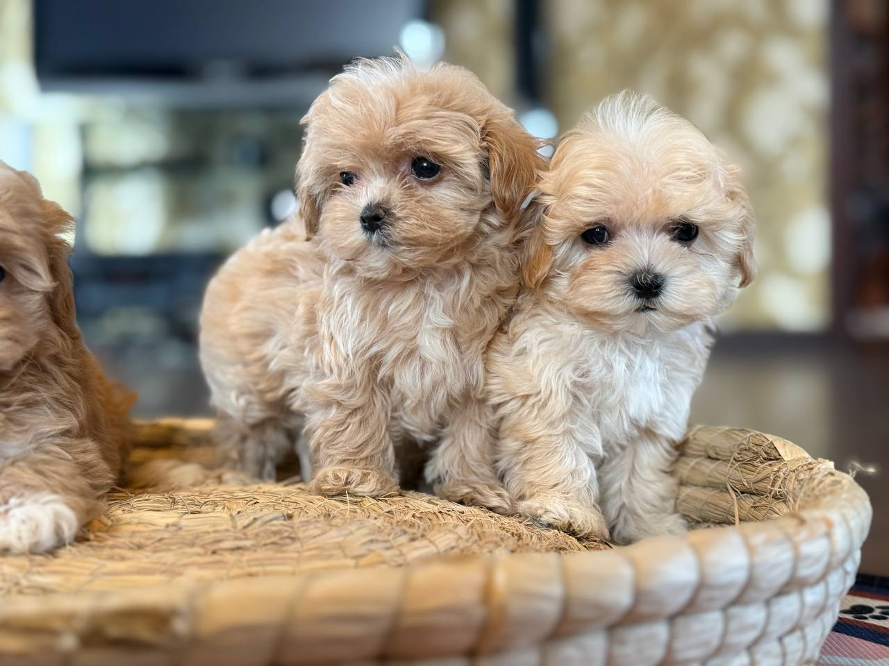

Характер
Ласковый, общительный и внимательный к человеку. Быстро запоминает правила дома и хорошо чувствует настроение хозяина.

Щенки мини и микро от проверенных родительских линий. Познакомим по видео и поможем выбрать щенка, подходящего именно вашей семье.
Покажем, как щенок двигается и общается с человеком. Расскажем о его характере и весе, покажем родителей, ветпаспорт и договор.
Мария проведёт видеознакомство и ответит на вопросы.
Записаться на видеознакомствоДо бронирования · бесплатно
Ежедневно с 10:00 до 21:00 по Москве
Больше видео и фото с щенками
в нашем Telegram-канале.
Видео щенков
@maltipooTeddi ↗

Мальтипу — небольшой компаньон, ориентированный на человека.
Он быстро привыкает к домашнему ритму, хорошо обучается и любит участвовать в жизни семьи.
Подробнее о породе →Ласковый, общительный и внимательный к человеку. Быстро запоминает правила дома и хорошо чувствует настроение хозяина.
Нужны сбалансированное питание, регулярное расчёсывание и плановый груминг.
Мальтипу не нужны многочасовые прогулки, но важны ежедневные игры и общение. Благодаря небольшому размеру его удобно брать с собой.
Мини и стандарт — от 150 000 ₽ · Микро — от 190 000 ₽
Подберите щенка и узнайте,
какой подходит именно вам.
Выберите один из вариантов.

Если щенок не вырос в заявленный размер за 6 месяцев — возвращаем полную стоимость. Условия закреплены в договоре.
Покажем малыша по видеосвязи: как двигается, как реагирует, какого он размера. Решение принимаете после знакомства.
Консультируем по уходу, кормлению и адаптации после переезда малыша.
По Москве и области — наш водитель. Доставку по России и за рубеж согласуем отдельно. При получении сверяете щенка с видео.
Смотрим щенка по видео вместе с вами. Вы сможете задать любой интересующий вас вопрос.
Задаток 20% фиксирует щенка за вами на 1–2 недели. Договор оформляем онлайн.
Фиксируем пол, окрас, цену и гарантию на размер в документах к щенку.
Курьер привозит малыша лично в руки. Вы сверяете щенка с видео при получении.
Мы остаёмся на связи после переезда малыша,
оказываем поддержку и помогаем с адаптацией.
Что пишут нам после
переезда щенка?
Мы показываем щенков в естественной
среде, такими, какие они есть.
Мини и стандарт — от 150 000 ₽, микро — от 190 000 ₽. Мария пришлёт подборку с точными ценами до видеознакомства.
Гарантия на размер действует до 6 месяцев. Размер и условия гарантии закрепляем в договоре.
Мальтипу — гибрид мальтезе и пуделя. Передадим ветпаспорт, договор и информацию о родителях.
Свяжитесь с нами и обратитесь к ветеринару. Мы остаёмся на связи после переезда и помогаем с уходом и адаптацией.
Согласуем маршрут, дату и стоимость заранее. Щенка передадут вам лично в руки вместе с документами.
Питомник мальтипу в Москве и Московской области.
Родительские линии из Кореи и Китая.
Гарантия на размер — 6 месяцев. Условия закреплены в договоре.
Передадим ветпаспорт с прививками, договор с гарантиями и карточку щенка с данными о родителях.
Поможем с уходом и адаптацией малыша. Остаёмся на связи после переезда.
Родительские линии из Кореи и Китая. Покажем родителей и расскажем об их характере, весе и окрасе.

Московская обл.
Богородский округ
д. Кабаново
ул. Новая, 8
Видеознакомство: 10:00–21:00 по Москве, ежедневно и бесплатно.
Личная встреча — по записи.
Расскажем о доступных щенках,
родителях, гарантиях и доставке.